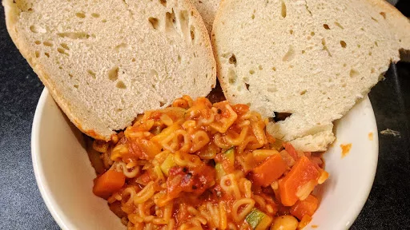

Italian vegetable soup
45 mins
Serves 8
Vegetarian
Italian

Ingredients
-
2
onions, chopped
-
2
carrots, chopped
-
4
sticks celery, chopped
-
1
tbsp olive oil
-
1
tbsp caster sugar
-
4
cloves garlic, finely crushed
-
2
tbsp tomato puree
-
2
bay leaves
- few sprigs thyme
-
3
courgettes, chopped
-
1x 400 g can butter beans
-
1x 400 g can chopped tomatoes
-
1⅕
litres vegetable stock
-
100
g Parmesan cheese, grated
-
140
g small pasta shapes
- small bunch basil, shredded
- crusty bread, to serve
Instructions
- Gently cook the onions, carrots and celery in the oil in a large pan for 20 minutes
until soft. Splash in some water if they stick. Add the sugar, garlic, tomato puree, herbs and courgettes, and cook for 4-5 minutes
on a medium heat until they brown a little.
- Tip in the beans, tomatoes and stock, then simmer for 20 minutes
. Add half of the cheese and the pasta and simmer for 6-8 minutes
until the pasta cooked. Sprinkle with basil and the remaining cheese and serve with hunky of crusty bread.
-
kcal
215
-
fat
6 g
-
saturates
3 g
-
carbs
30 g
-
sugar
12 g
-
fibre
5 g
-
protein
11 g
-
salt
1.06 g
BBC Good Food: Low-fat Feasts
Short Link
Long Link